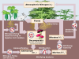

denitrification

Definition: Denitrification is a microbially facilitated process where nitrate (NO3−) is reduced and ultimately produces molecular nitrogen (N2) through a series of intermediate gaseous nitrogen oxide products. Facultative anaerobic bacteria perform denitrification as a type of respiration that reduces oxidized forms of nitrogen in response to the oxidation of an electron donor such as organic matter. The preferred nitrogen electron acceptors in order of most to least thermodynamically favorable include nitrate (NO3−), nitrite (NO2−), nitric oxide (NO), nitrous oxide (N2O) finally resulting in the production of dinitrogen (N2) completing the nitrogen cycle. Denitrifying microbes require a very low oxygen concentration of less than 10%, as well as organic C for energy. Since denitrification can remove NO3−, reducing its leaching to groundwater, it can be strategically used to treat sewage or animal residues of high nitrogen content. Denitrification can leak N2O, which is an ozone-depleting substance and a greenhouse gas that can have a considerable influence on global warming.
Source: Wikipedia
Wikipedia Page (Something wrong with this association? Let us know.)
Wikidata Page (Something wrong with this association? Let us know.)
Occurs in: